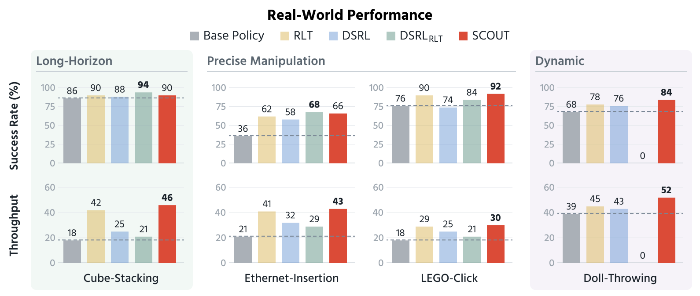
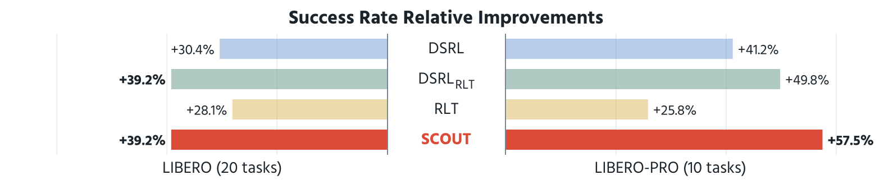

Left Column Title
[Description placeholder.]
Left video placeholder
Cube-Stacking
Ethernet-Insertion
LEGO-Click
Doll-Throwing
SCOUT on the four real-world tasks (real-time playback).
Contact-rich and dynamic manipulation often require well-crafted refinement methods that can learn from sparse rewards while preserving efficient execution beyond a large pretrained policy. We introduce SCOUT, a lightweight framework for refining pre-trained vision-language-action (VLA) policies online through critic-guided Schrödinger transport.
SCOUT formulates policy improvement as a Schrödinger bridge from the VLA's reference action chunk to a distribution of promising corrections, where a critic proposes and reweights multiple candidate action chunks, thereby constructing a training target that captures coordinated changes across action space and time. We exploit the point-source structure induced by conditioning on the VLA reference action, enabling tractable bridge regression toward an online critic-weighted target. This enables simulation-free learning through endpoint regression on Brownian interpolants without iterative coupling training.
We evaluate SCOUT on simulated benchmarks and real-world precise manipulation tasks. SCOUT improves success rates over RLT and DSRL baseline methods. It achieves comparable measured inference latency to RLT and improves real-world active-execution throughput over RLT and both DSRL variants. Together, these results demonstrate that reference-conditioned action transport strengthens effective online refinement with low deployment overhead.
We refine a frozen π0.5 policy on a bimanual YAM platform across four tasks spanning long-horizon, precise, and dynamic manipulation. Every method is trained online for 300 episodes and evaluated on 50 trials. Pick a task to compare one episode of each method side by side. Clips are aligned to the first robot motion and play together in real time.
Long-horizon Stack the blue, red, and yellow cubes into a tower.
Precise manipulation Insert an Ethernet cable into the rightmost port of the network switch.
Precise manipulation Press a minifigure onto its baseplate until it clicks.
Dynamic Throw the doll into the red bin across the table.

Top: success rate (%) over 50 evaluation trials per task. Bottom: throughput, the number of successful completions within 10 minutes of execution. The dashed line marks the frozen base policy.
4 / 4
tasks with the highest throughput among all methods
2.6×
Cube-Stacking throughput over the base policy (18 → 46), with episodes about twice as fast
36% → 66%
Ethernet-Insertion success, nearly doubling the base policy
Cube-Stacking
The base policy already succeeds reliably, so SCOUT's gain comes from speed: it finishes an episode in about half the time (13.3 s vs. 26.1 s) and reaches the highest throughput (46 vs. 18).
Ethernet-Insertion
Here the gain comes from reliability: success nearly doubles over the base policy (36% to 66%) at a similar pace, giving the highest throughput of any method.
LEGO-Click
SCOUT reaches the best success rate (92%) while also executing faster, for the highest throughput among all methods.
Doll-Throwing
A faster throw would miss the bin, so SCOUT keeps the pace and improves success (68% to 84%). DSRLRLT's second VLA pass stalls the arm, and it fails every throw.
We evaluate on 20 LIBERO tasks and 10 LIBERO-PRO layouts, where LIBERO-PRO exchanges object-placement regions and uses held-out initial states for evaluation. All methods refine the same frozen π0.5 checkpoint, train online for 300 episodes, and are evaluated on 100 trials per task.

Average success-rate gain over the base policy (percentage points), over the 20 LIBERO tasks (left) and the 10 LIBERO-PRO layouts (right).
53.1% → 92.3%
LIBERO average success, tying DSRLRLT at half its VLA passes per decision
+57.5 pts
LIBERO-PRO gain, 7.7 points above the next best method and over 30 above RLT
30 / 30
simulated tasks improved over the base policy; every baseline regresses on at least two
[Description placeholder.]
[Description placeholder.]
[Description placeholder. Use the slider to move between the start and end frames.]
Start Frame
End Frame
[Description placeholder.]
[Related work placeholder, e.g. Paper title ...]